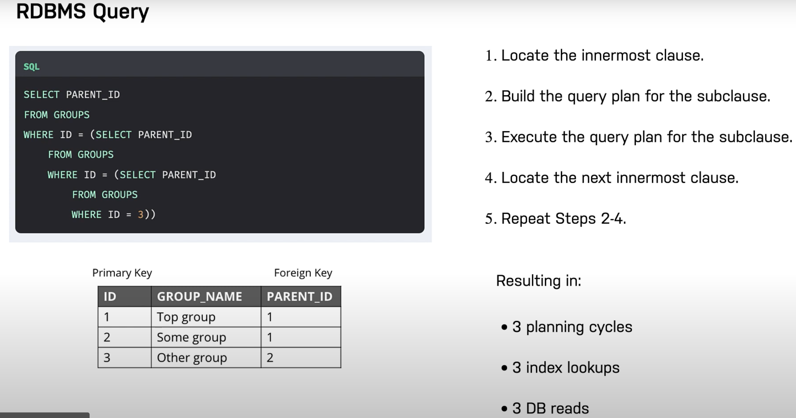
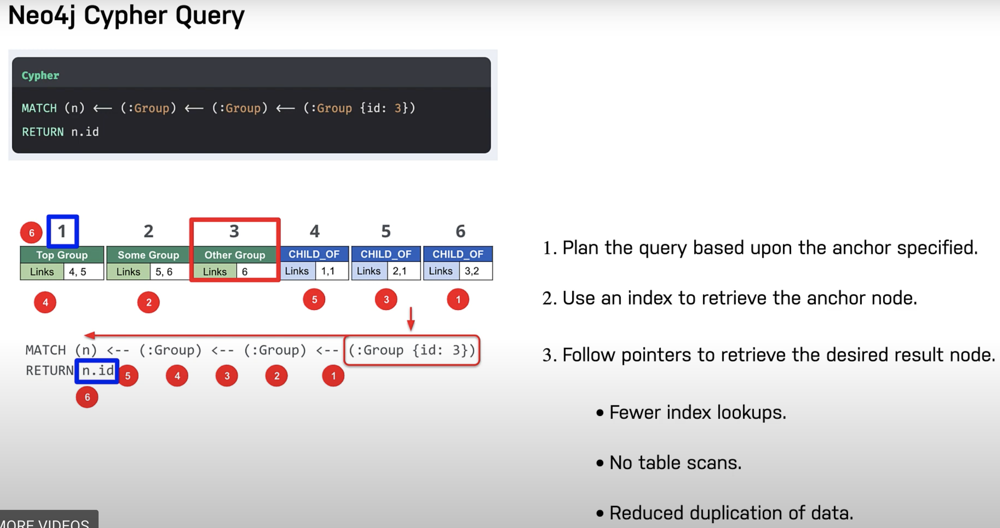
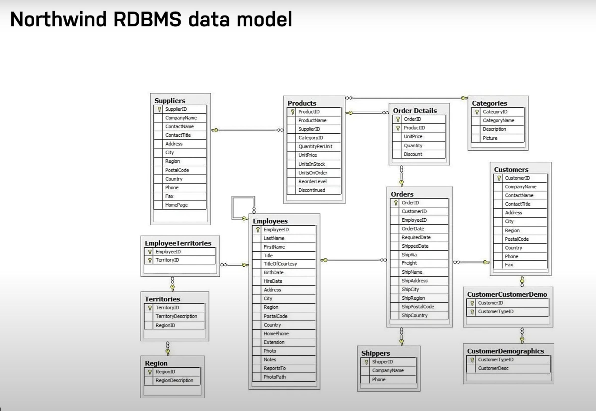
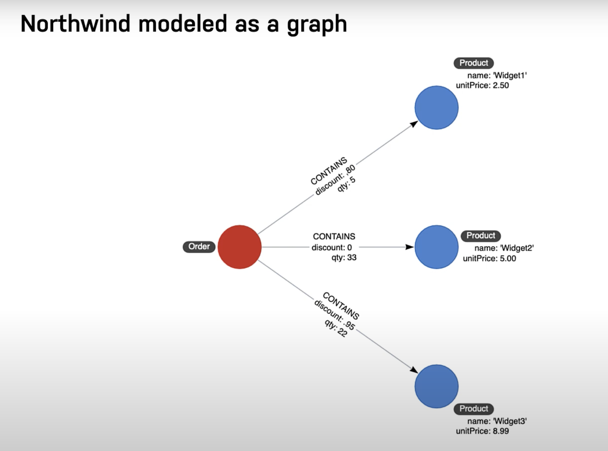
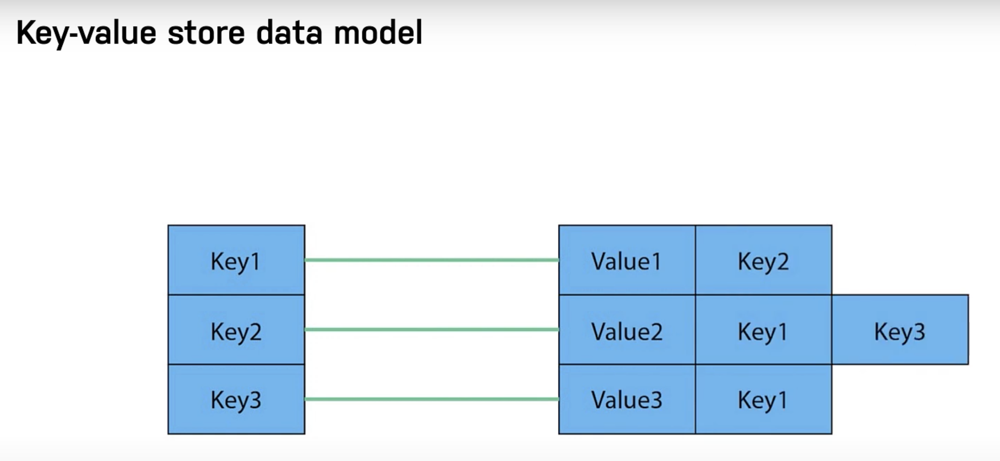
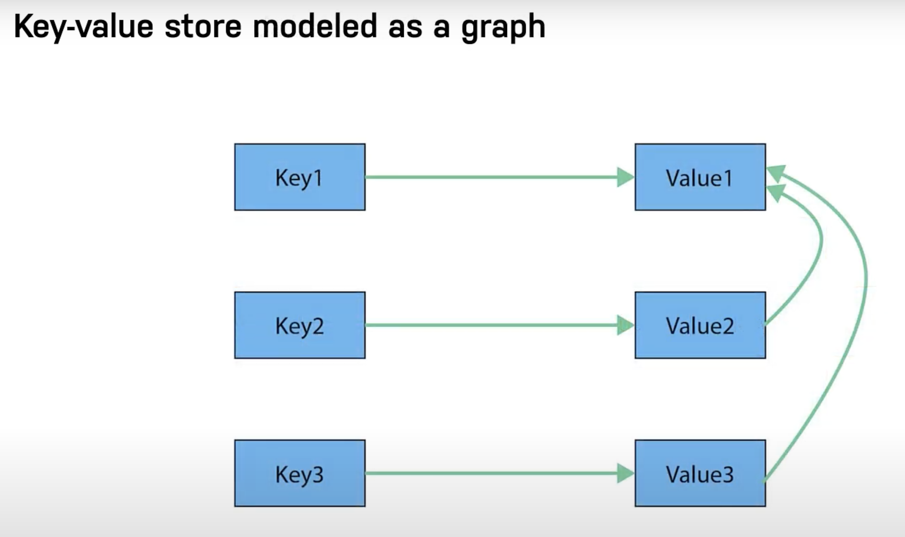
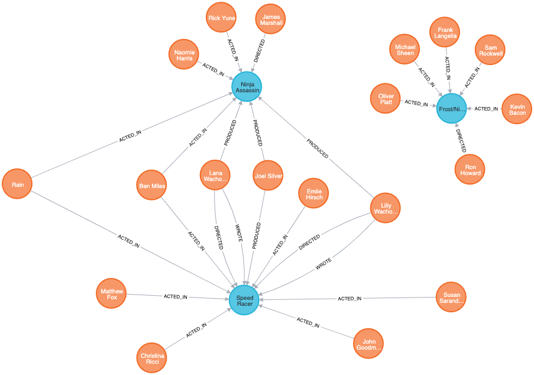

Building Neo4j Applications with Python
Contents
Building Neo4j Applications with Python#
Neo4j Graph Academy
you will work on a pre-built repository for the fictional client Neoflix. The course is designed to be framework agnostic, so although we have chosen a specific framework, the tasks that you will perform will be the same regardless of your choice of framework.
We have built a repository that takes care of the boiler plate, so you can focus on implementing the functionality.
The project is designed to work with Python version 3.9
Packages can be installed with pip
A web server has been built with Flask
Authentication is handled with JWT Tokens and PyJWT
Passwords are encrypted and verified with bcrypt
Testing is performed using pytest
Setting up project#
https://graphacademy.neo4j.com/courses/app-python/0-setup/1-setup/
Setting environment and dependencies
git clone https://github.com/neo4j-graphacademy/app-python.git
conda create --name node4jgraph
conda activate node4jgraph
conda install pip
pip install -r requirements.txt
Setting Environment Variables
cp .env.example .env
- FLASK_APP=api # FLASK_APP tells Flask to use the application in the api/ folder
- FLASK_ENV=development # Run Flask in Development Mode
- FLASK_RUN_PORT=3000 # Run the server on port 3000
- JWT_SECRET=secret # A secret key for signing JWT tokens
- SALT_ROUNDS=10 # The cost parameter used when hashing passwords
- NEO4J_URI=neo4j://localhost:7687 # The URI for your Neo4j Sandbox instance
- NEO4J_USERNAME=neo4j # The username for your Neo4j Sandbox instance
- NEO4J_PASSWORD=password # The password for your Neo4j Sandbox instance
Start the project
flask run
Notes
* Serving Flask app 'api' (lazy loading)
* Environment: development
* Debug mode: on
* Running on http://127.0.0.1:3000/ (Press CTRL+C to quit)
* Restarting with stat
* Debugger is active!
* Debugger PIN: 106-203-194
Neo4j Fundamentals#
The Seven Bridges
Leonardo Euler (founder of graph theory)
Graph Elements
Nodes(Vertices)
Edges(Relationships)
Graph Structures
Bidirectional/Directional(Strength)
strength can help us predict how relationships will flow
time it takes to fly package can be used as edge between 2 points
or how long does it take for packets to get transmitted
traversal can help in finding shortest path
while traversal, it is assumed that relationship is followed in graph
while traversal, can a node be visited multiple times
neo4j is optimized for node traversal so that nodes are not traverse multiple times
Graphs are evereywhere
GraphGists - Use cases
Property Graphs
The key elements a property graph and why they are useful.
How Neo4j implements a native graph using index-free adjacency.
Some of the ways that Relational and other NoSQL databases can be implemented in Neo4j.
What is a Property Graph
additional elements into a graph, which helps in cypher query
labels: gives a starting point for a query
in neo4j, a node can have 0,1 or many labels
for example - Michael is a man, Sarah is a woman, GraphInc is a company
property: key-value pair
can be a single value or a list of values
for example - Michael firstname is Michael, Michael lastname is Faraday, Michael birthday is 01/01/1900, GraphInc has employeeCount 50
Native Graph Advantage
index free adjacency results in much better result queries than rdbms
native means everything from storage of the data to query language is designed with traversal in mind
native graph database are different from other databases due to its feature of index free adjacency
A traditional rdbms query results in multiple index lookups and multiple db reads/table scans to read traversal sort of queries
Native graph instead traverses using pointer nodes which result in faster result
it stores nodes and relationships as objects that are linked to each other via pointers.
In the example below, the Cypher query starts with the anchor of the query which is the group node of id=3. Then it uses the links stored in the relationship in node objects to traverse the graph pattern
this resulted in fewer index lookups, no table scans, reduced duplication of data


Non-Graph databases as graphs
in traditional rdbms,
the joins are computed at read time.
as number of records increase, the query time becomes slow
modeling many-to-many relationships means visualizing pivot tables
in native graphs,
relationships are stored at the very beginning in a graph database.
as number of records increase, the query time is proportional to number of records touched
modeling many-to-many relationships are more natural


NoSQL databases store data as
key-value stores
document stores


Cypher Fundamentals#
In this module we learn how to write Cypher code to retrieve data from the graph
Retrieve nodes from the graph.
Retrieve nodes with a particular label.
Filter the retrieval by a property value.
Return property values.
Retrieve nodes and relationships from the graph using patterns in the graph.
Filter queries
DataModel

Introduction to Cypher
Nodes
nodes are represented with labels as
(:Person)or(:Movie)
Relationship
relationship must have a direction and a type as
-->in Cypher they are represented as
[:DIRECTED]or[:ACTED_IN]
Properties
Both nodes and relationships can contain properties
properties are used to represent data in graph
they are represented as (:Person
{name: 'Tom Hanks'}) or (:Movie{title: 'Cloud Atlas'})
A typical Cypher query
Retrieve person nodes of person named ‘Tom Hanks’ who acted in the movie ‘Cloud Atlas’
MATCH clause tells us to retrieve data in graph
RETURN clause tells us to return Person and Movie node information
MATCH
(p: Person {name: 'Tom Hanks'}) - [:ACTED_IN] -> (m:Movie {title: 'Cloud Atlas'})
RETURN p, m
Finding Relationships
traverse the graph using relationships
a Cypher pattern
() -<relationship>-> ()if we are interested in all the movies Tom Hanks has acted in, we use
a (:Person) has acted in a (:Movie)
MATCH (p:Person {name: 'Tom Hanks'})-[:ACTED_IN]->(m)
RETURN m.title
MATCH (p:Person)-[:ACTED_IN]->(m)
WHERE p.name = 'Tom Hanks'
RETURN m.title
MATCH (m:Movie)<-[:ACTED_IN]- (p:Person)
RETURN m.title, p.name
p and m are variables
Movies released in 2008 or 2009
MATCH (m:Movie)<-[:ACTED_IN]-(p:Person)
WHERE m.released = 2008 or m.released=2009
RETURN m
MATCH (p:Person) -[:ACTED_IN]-> (m:Movie)
WHERE m.released = 2008 or m.released=2009
RETURN m
MATCH (p:Person) -[:ACTED_IN]-> (m:Movie)
WHERE m.released = 2008 or m.released=2009
RETURN m

All the movies released between 2000 and 2003
MATCH (p:Person)-[:ACTED_IN]->(m:Movie)
WHERE 2000 <= m.released <= 2003
RETURN p.name, m.title, m.released
All the actor names starting with Michael
MATCH (p:Person)-[:ACTED_IN]->()
WHERE p.name STARTS WITH 'Michael'
RETURN p.name
People who wrote movie but did not direct the same movie
MATCH (p:Person)-[:WROTE]->(m:Movie)
WHERE NOT exists( (p)-[:DIRECTED]->(m) )
RETURN p.name, m.title
People who were born in year 1965, 70 and 75
MATCH (p:Person)
WHERE p.born IN [1965, 1970, 1975]
RETURN p.name, p.born
Actors who played Neo in movie The Matrix
MATCH (p:Person)-[r:ACTED_IN]->(m:Movie)
WHERE 'Neo' IN r.roles AND m.title='The Matrix'
RETURN p.name, r.roles
Actors in movie ‘The Matrix’ who were born after 1960
MATCH (a:Person)-[:ACTED_IN]->(m:Movie)
WHERE a.born > 1960 and m.title = 'The Matrix'
RETURN a.name, a.born
Writing Data to Neo4j#
Objectives
Use MERGE to create nodes in the graph.
Use MERGE to create relationships in the graph.
Create, update and remove properties for nodes and relationships in the graph.
Perform conditional MERGE processing, depending on what is in the graph.
Delete nodes and relationships from the graph.
Create node in database
CREATE or MERGE can be used to create nodes
MERGE eliminates duplication of nodes
CREATE does not lookup the primary key before adding nodes
multiple MERGE clauses can be used together within one code block
Added 1 label, created 1 node, set 1 property
MERGE (p:Person {name: 'Michael Cain'})
Match the created node
MATCH (p:Person {name: 'Michael Cain'})
RETURN p
multiple MERGE clauses
MERGE (p:Person {name: 'Katie Holmes'})
MERGE (m:Movie {title: 'The Dark Knight'})
RETURN p, m
Create relationship in database
first find nodes and then create relationship among them
MATCH (p:Person {name: 'Michael Cain'})
MATCH (m:Movie {title: 'The Dark Knight'})
MERGE (p)-[:ACTED_IN]->(m)
validate the relationship created
MATCH (p:Person {name: 'Michael Cain'})-[:ACTED_IN]-(m:Movie {title: 'The Dark Knight'})
RETURN p, m
the reverse relationship does not exist
MATCH (p:Person {name: 'Michael Cain'})<-[:ACTED_IN]-(m:Movie {title: 'The Dark Knight'})
RETURN p, m
creates nodes and relationships together
by default if relationship direction is not specified, it creates from left node to right node specified in the query
MERGE (p:Person {name: 'Chadwick Boseman'})
MERGE (m:Movie {title: 'Black Panther'})
MERGE (p)-[:ACTED_IN]-(m)
Validate query above
MATCH (p:Person {name: 'Chadwick Boseman'})-[:ACTED_IN]-(m:Movie {title: 'Black Panther'})
RETURN p, m
Create node and relationship
Find the Person node for Daniel Kaluuya.
Create the Movie node, Get Out.
Add the ACTED_IN relationship between Daniel Kaluuya and the movie, Get Out.
MATCH (p:Person {name: 'Daniel Kaluuya'})
MERGE (m:Movie {title: 'Get Out'})
MERGE (p)-[:ACTED_IN]->(m)
Validate query above
MATCH (p:Person {name: 'Daniel Kaluuya'})-[:ACTED_IN]-(m:Movie {title: 'Get Out'})
RETURN p, m
Updating Properties